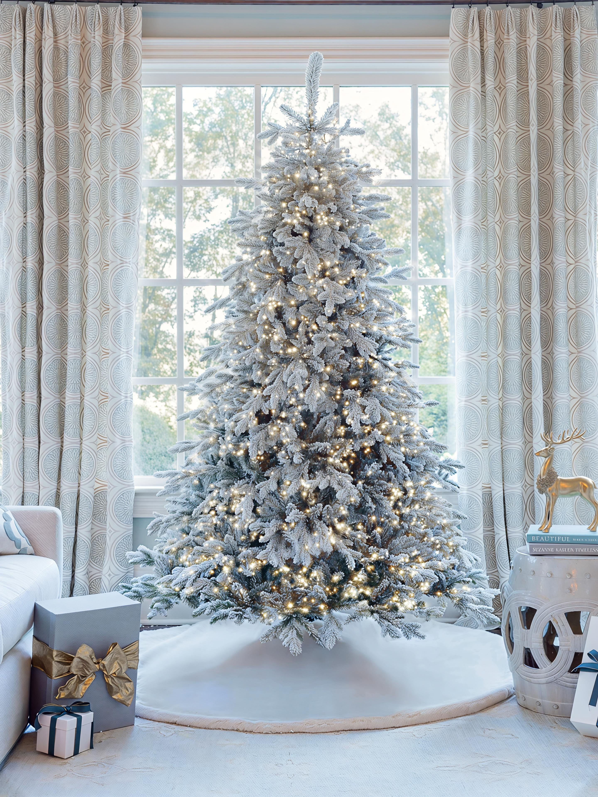

The Vintage Christmas Revival: How to Bring That Nostalgic Holiday Magic Home

Bring nostalgic holiday charm home with vintage ornaments, warm lights, flocked greenery, and a timeless Carol's Christmas Conifers tree.

Bring nostalgic holiday charm home with vintage ornaments, warm lights, flocked greenery, and a timeless Carol's Christmas Conifers tree.